별
ПЁЛЬ
별 · Звезда
Когда огонь
собирает людей
за одним столом
Листайте
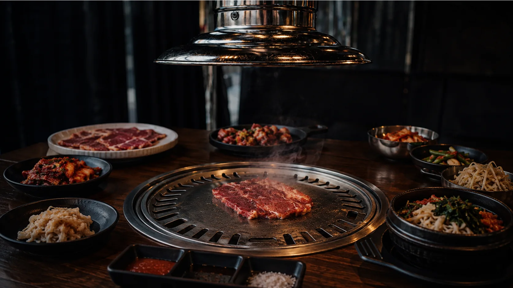
02 — Ритуал
ВыбратьСвинина, говядина, морепродукты. Порции приносят сырыми — дальше всё в ваших руках.
Разожжённый грильГриль встроен в стол. Его разжигают при вас и следят за жаром весь вечер.
ЖаритьПара минут на каждую сторону. Щипцы и ножницы на столе, вытяжка — прямо над грилем.
ПробоватьЛист салата, кусок мяса, кимчи, соус. Собирается прямо в руке.
ПовторитьИ так — пока за столом не закончится разговор.
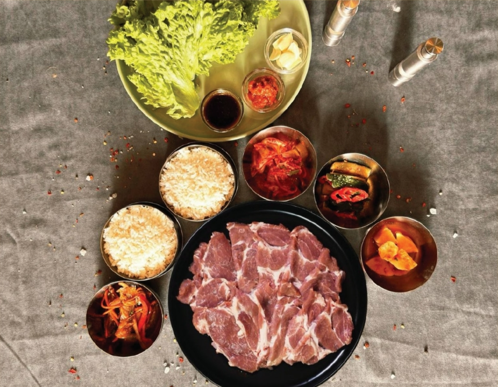
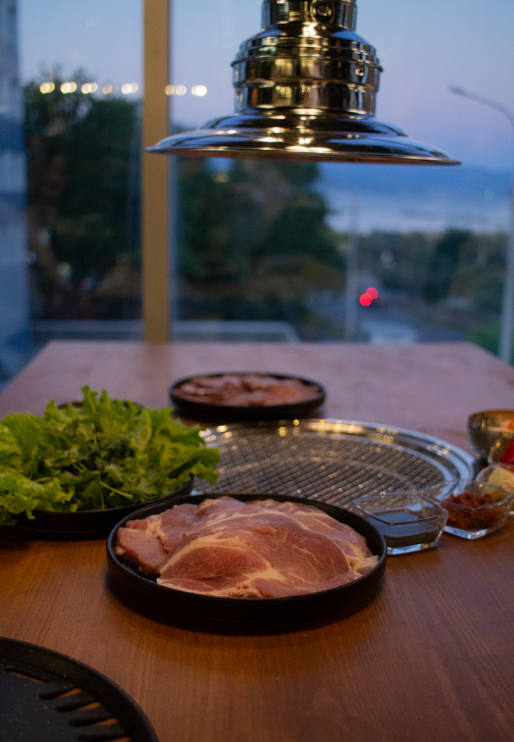
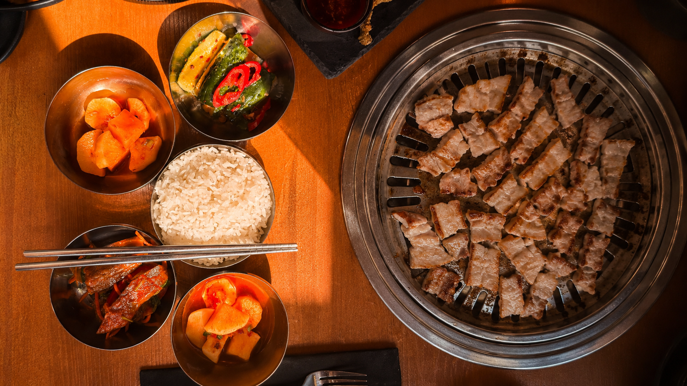
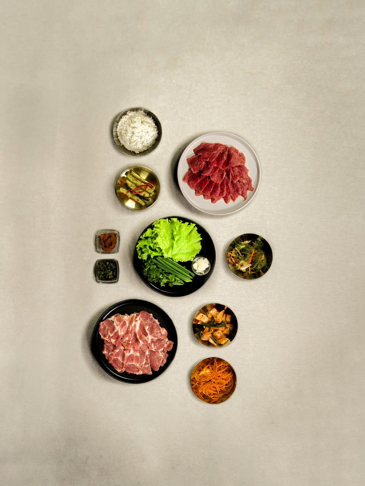
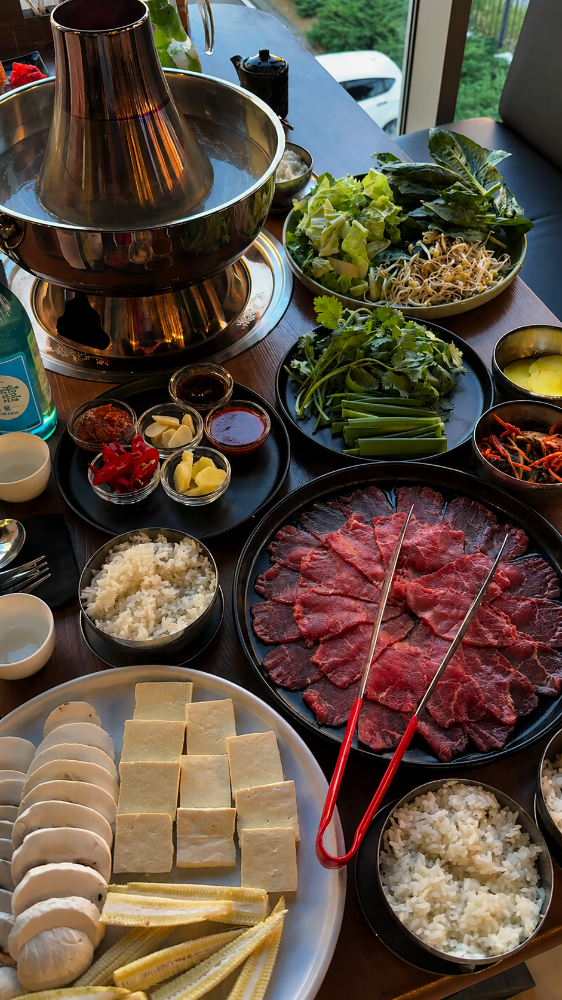
Корейская
кухня
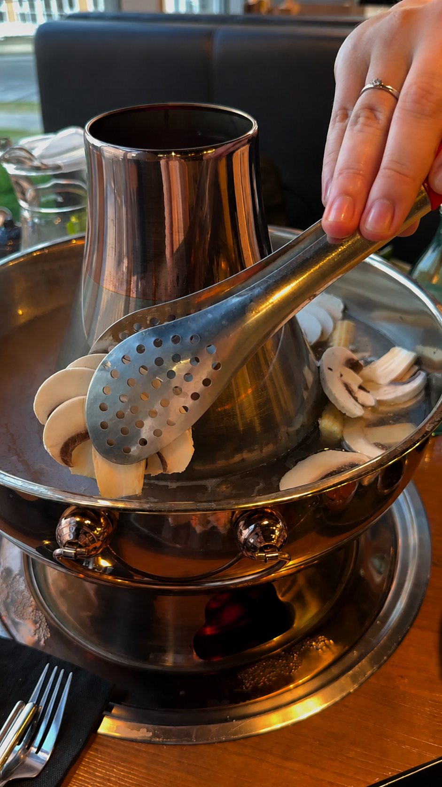
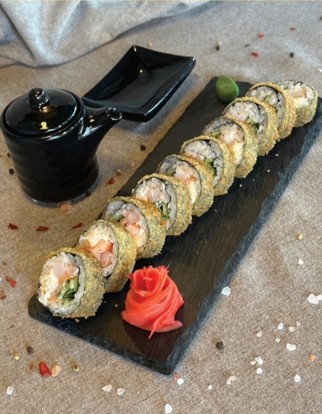
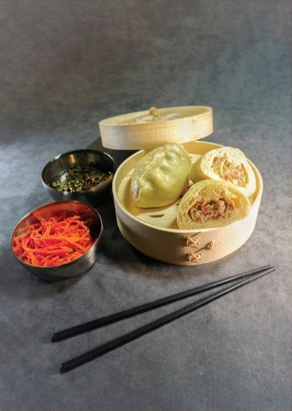
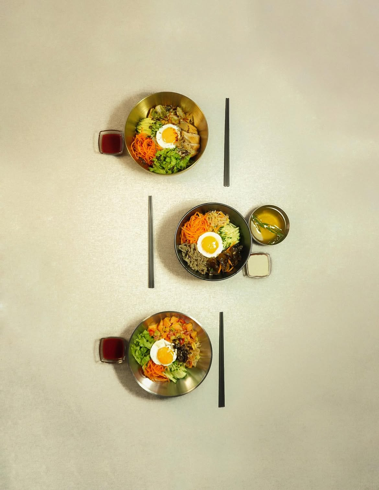
별 · Кухня
Традиции,
которые звучат
по-современному
Кимчи, пибимпап, пигоди, хого — то, что в Корее едят дома каждый день. Готовим с нуля: от маринадов до теста.
Смотреть меню03 — Производство
ПЁЛЬ ЦЕХ
Создаём сами. Готовим с нуля.
Лапша, роллы, пигоди, моти, корейские салаты. То же, что в зале ресторана, — только упаковано и готово к дороге.
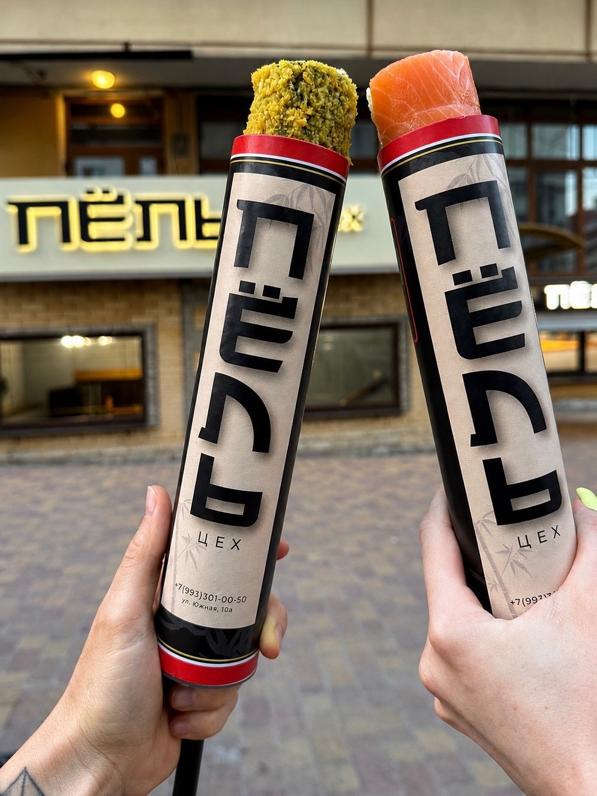
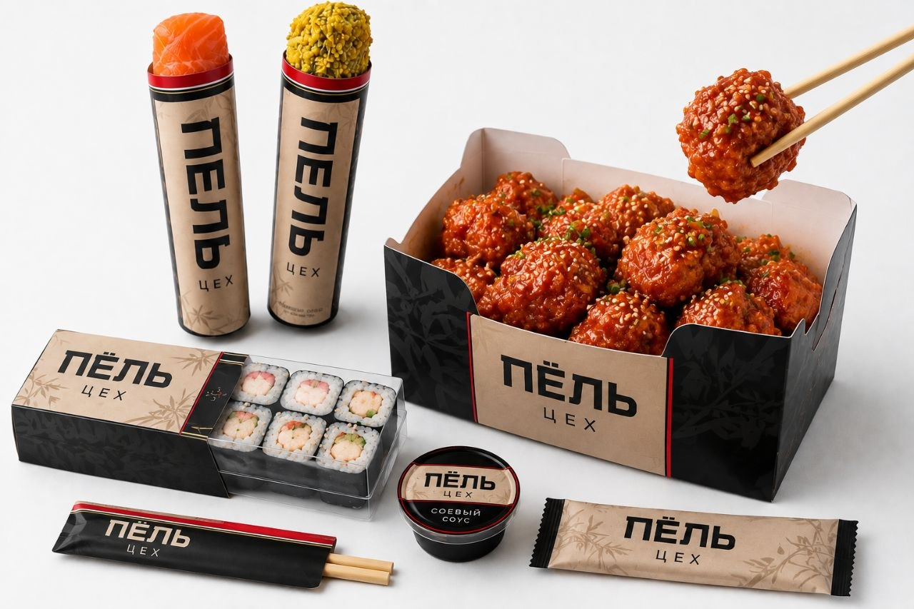
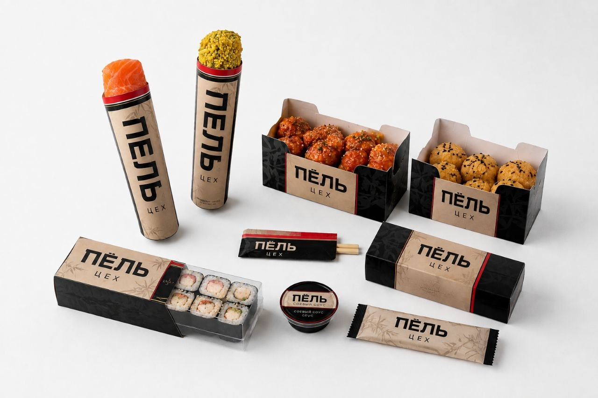
Южная улица, 10А · Новороссийск · +7 993 301-00-50
Заказать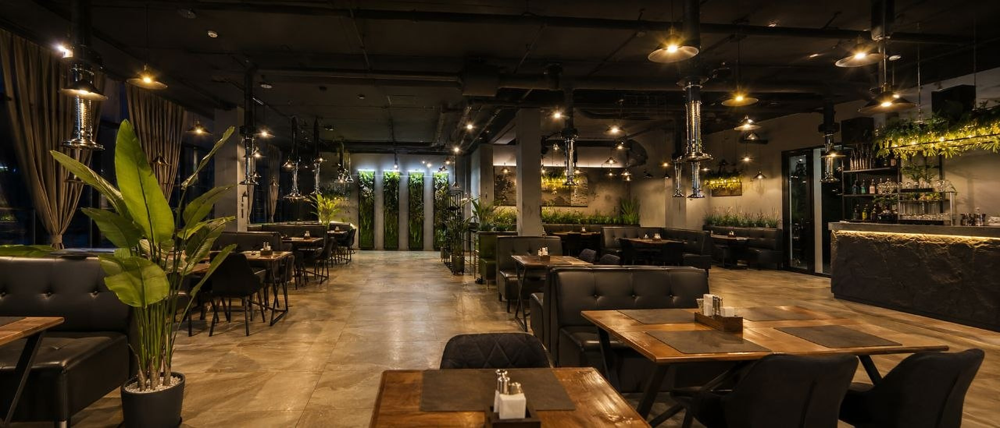
04 — Атмосфера
Вечер
в ПЁЛЬ
Место, где ужин становится частью вечера.
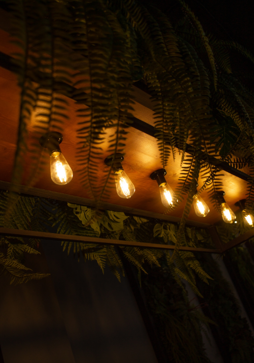
별
Панорама на бухту, приглушённый свет, гриль в центре стола. Вечер идёт медленно — так и задумано.
ул. Хворостянского, 2Б · Новороссийск